M8 / R4-v1 / an interactive experiment
One financial situation.
More ways to understand it.
A connected dashboard, 26 question-led views, and five visual choices to compare. This is the next design conversation, not a production financial launch.
Keep the compact house-and-money summary, deposit–term outcome map with its linked deposit curve, and timeline with a selected-date breakdown. Inputs stay separate, and Calculate commits a new scenario. The best result, inspected plan and pin remain distinct.
Start with the working journey
Both recordings are continuous, uncut and captured at normal speed. Timestamped cues and application hashes and completed playback checks.
The default, on two screens


Five meaningful alternatives
The live Chart library exposes both treatments for each question. Each pair uses the same scenario data. Images are captured renderings; the interactive dashboard remains the primary review.
Deposit curve: Linked detail panel / Direct annotation
A gives a stable exact-value panel; B points to the meaning of the discontinuity but becomes busier on a phone.

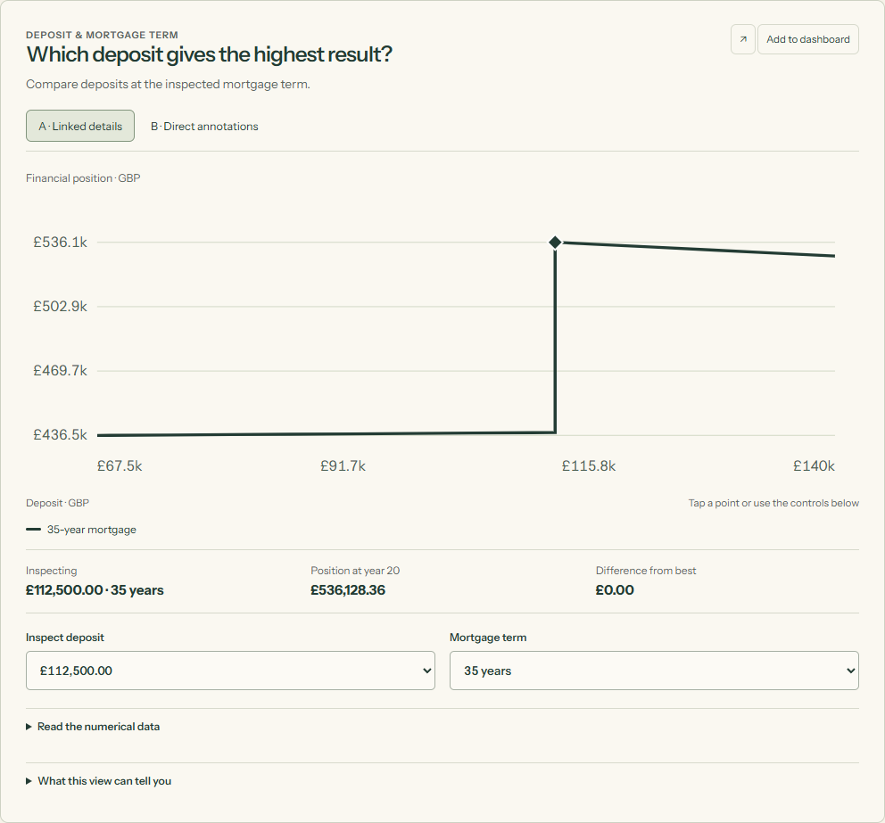

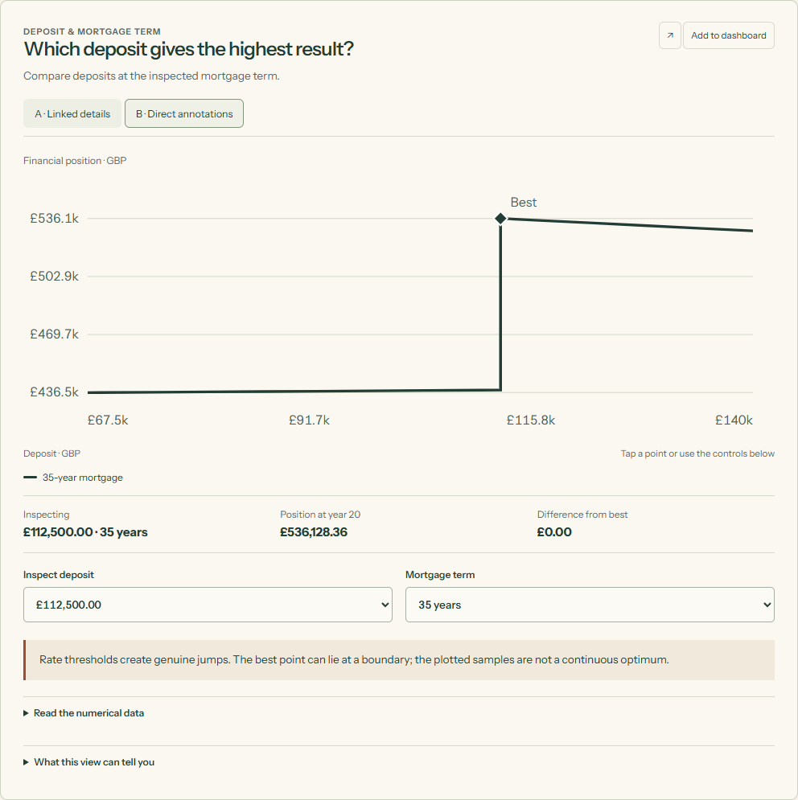
Deposit and term: Outcome map + linked curve / Near-best region + linked curve
Keep A as the central exploration. B makes the practical room for choice easier to see without suggesting a false central sweet spot.

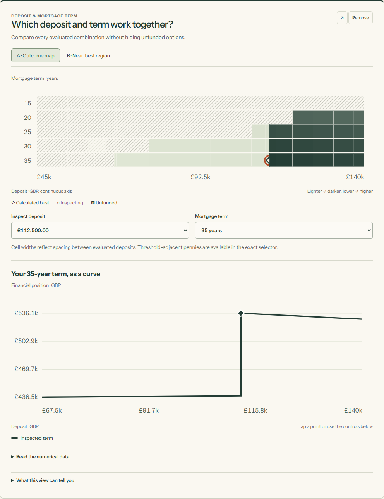

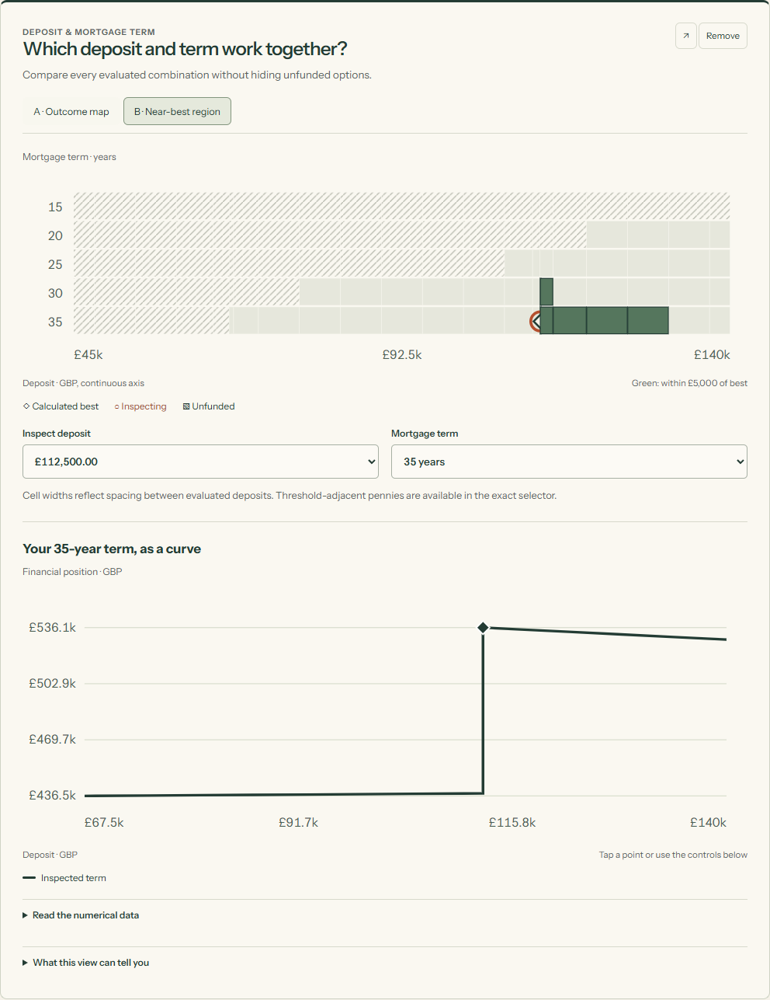
Position over time: Timeline + selected-date breakdown / Component small multiples
A keeps the result together. B explains why it changes, at the cost of more vertical space.

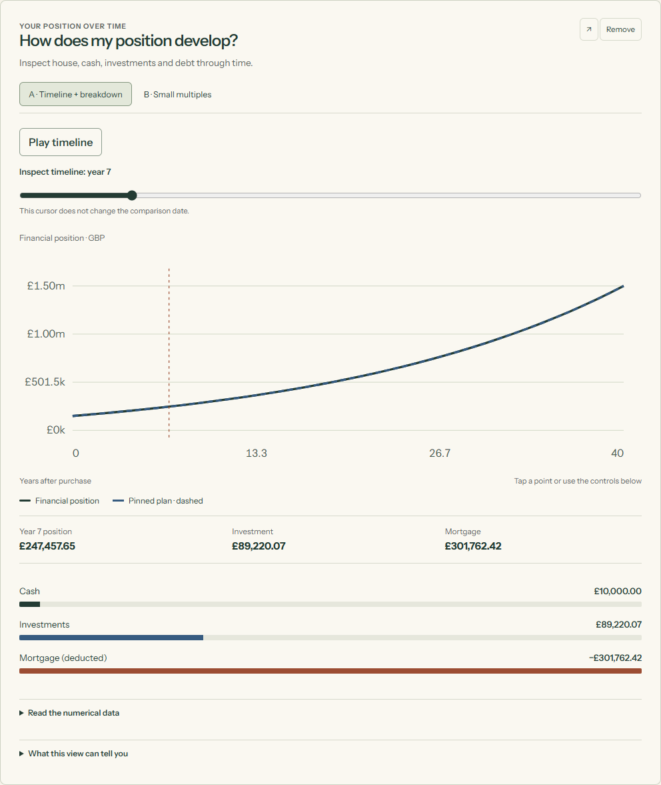

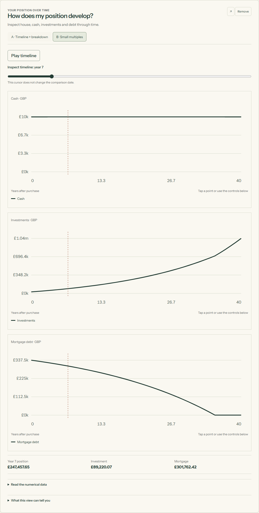
Loss and recovery: Selected path overlay / Aligned named-path panels
A is compact and makes the selected loss visible. B supports careful comparison on a shared scale and deserves an optional expanded view.

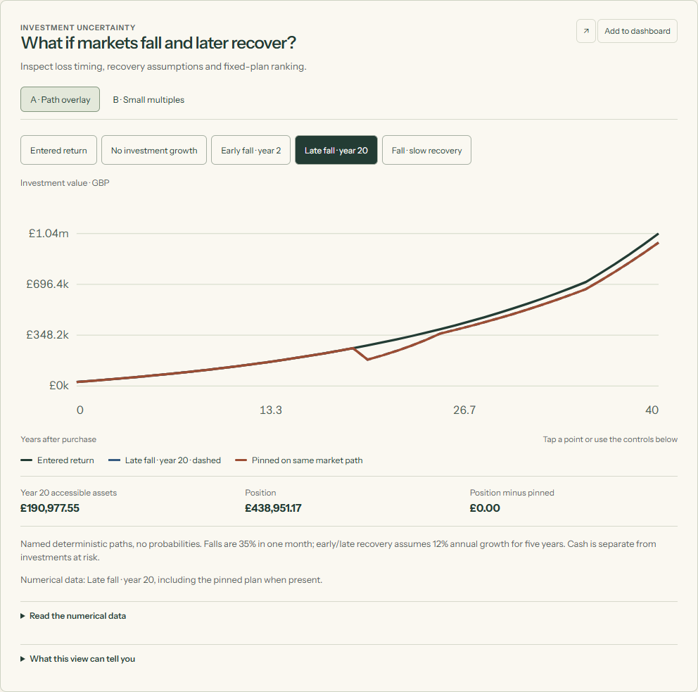

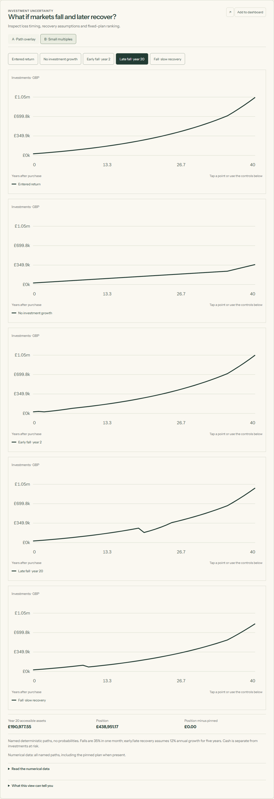
Familiar financial objects: Compact connected summary / Spacious illustrated summary
A preserves continuity with the introduction. B offers larger objects and more separation on narrow screens.

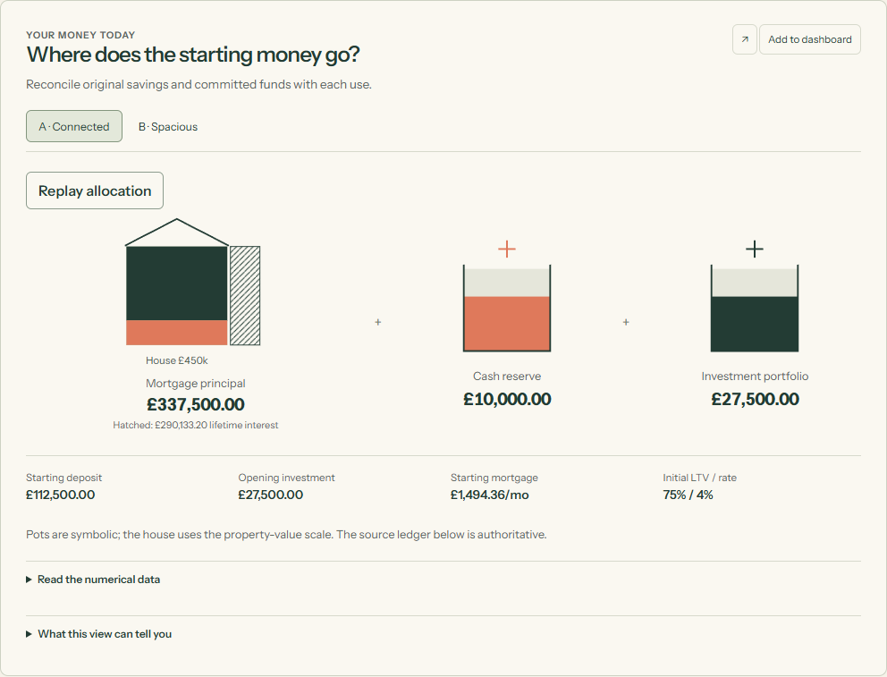

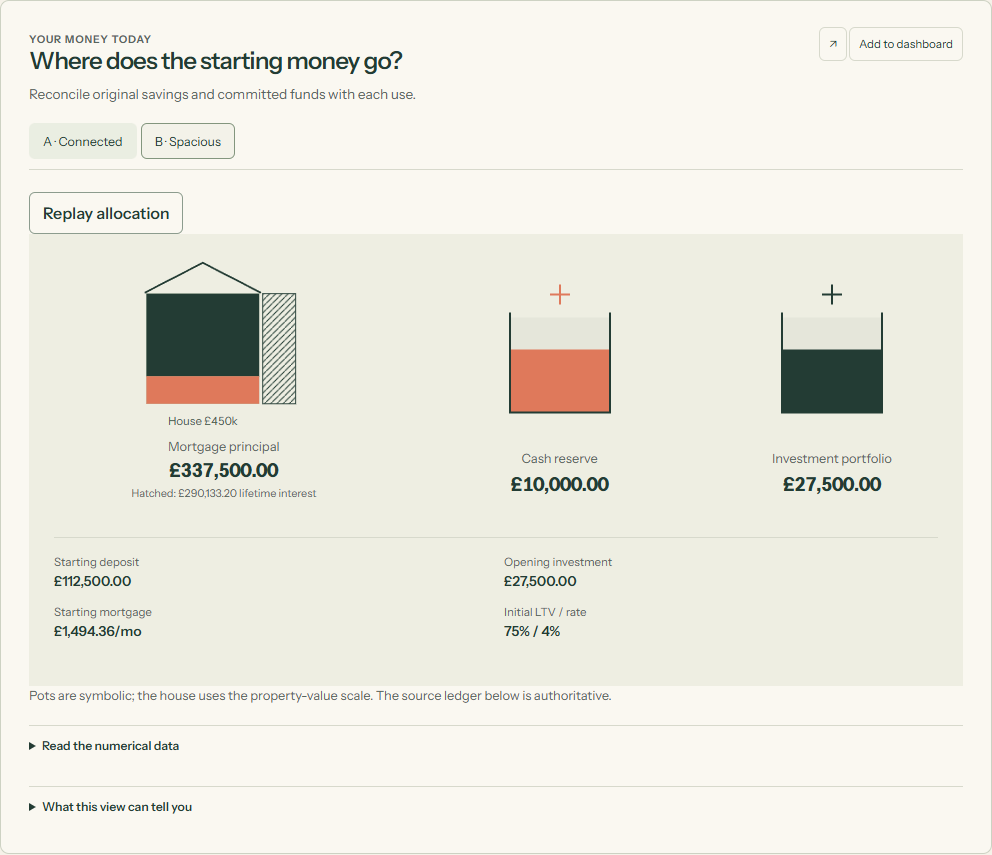
What deserves attention in review?
The near-best map is the strongest alternative to the default outcome map. The aligned loss/recovery panels make risk comparisons clearer, while the spacious summary offers a calmer reading of the familiar objects. Keep the optional wire surface out of the default: it adds depth exploration but its labelled 2D slice is easier to compare accurately.
Consider whether the default feels like one connected decision, whether the best-versus-inspected distinction is clear, and which optional questions earn permanent space. The long deeper sections may benefit from later curation after your visual feedback.
Agent evaluation, not user research
Scores are provisional judgement on a 1–5 scale, where 5 is strongest. Accessibility scores reflect native controls, tables, focus, reduced motion and automated checks; they do not establish spoken screen-reader usability.
| Treatment | Clarity | Usefulness | Appeal | Interaction | Mobile | Accessibility | Integrity | Consistency |
|---|---|---|---|---|---|---|---|---|
| Curve A | 4 | 4 | 4 | 4 | 4 | 4 | 5 | 5 |
| Curve B | 4 | 4 | 4 | 4 | 3 | 4 | 5 | 5 |
| Map A | 5 | 5 | 4 | 4 | 4 | 4 | 5 | 5 |
| Map B | 5 | 5 | 4 | 4 | 4 | 4 | 5 | 5 |
| Timeline A | 5 | 5 | 4 | 5 | 4 | 4 | 5 | 5 |
| Timeline B | 4 | 4 | 4 | 4 | 4 | 4 | 5 | 5 |
| Risk A | 4 | 5 | 4 | 4 | 4 | 4 | 5 | 5 |
| Risk B | 5 | 5 | 4 | 4 | 4 | 4 | 5 | 5 |
| Summary A | 4 | 4 | 4 | 4 | 4 | 4 | 5 | 5 |
| Summary B | 4 | 4 | 5 | 4 | 4 | 4 | 5 | 5 |
A contained introduction refinement
Deposits now live in scenario headings, starting investment is distinguished from monthly investing, and repeated reserve/scale explanations live in Details. The original example still ends with the larger deposit £102,911.67 ahead. Its final action opens clearly labelled dashboard example data.
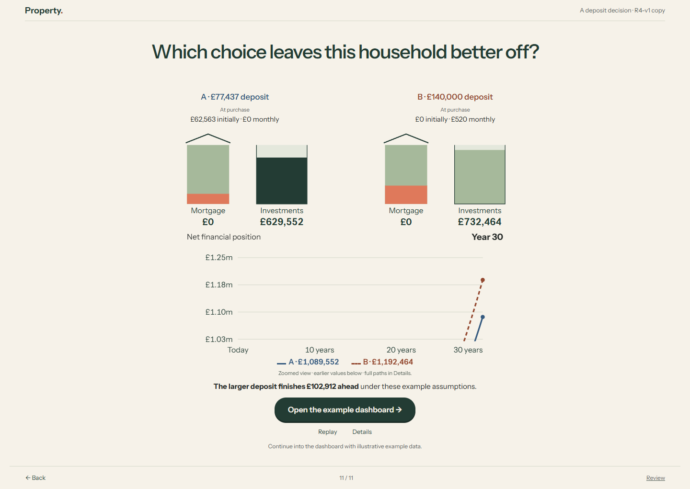
What is calculated, and by which model?
Every dashboard tile uses the same isolated Python Decimal model: sampled joint deposit/term search, end-of-month surplus investing, funding after payoff, one rate reset, funded overpayments and named loss/recovery scenarios. It is separate from the existing production engine, whose external-payment-funding assumptions do not support this experience. Capability map, financial contract and exclusions.
Financial position means constant house value + cash + investments − remaining mortgage. Rates are fictional, costs are entered, and purchase-committed funds are assumed already usable. The sample search includes exact LTV thresholds and neighbouring pennies. No probabilities, tax/LISA eligibility, suitability, product recommendation or global optimum are claimed.
Verification and remaining limits
18 exploratory Python tests, 10 preserved introduction tests, 7 state/presentation tests and 6 complete browser-worker/CPython parity cases pass. Independent review found six important issues; each was corrected and rechecked. One clean backend run passed all 4,730 tests, plus Ruff and strict mypy on 53 sources; two optional-PyYAML warnings remain.
All 26 tiles and five alternatives were rendered. Desktop/mobile checks cover stale and failed calculation, selection, pin, horizon/cursor, add/hide/reorder/expand/reset, rate stress, overpayment, no eligible plan, flat exact ties, adverse returns, invalid timing, keyboard, emulated touch and reduced motion. Tested 320/390/768/1280px layouts have no horizontal overflow; the tested default accessibility scans have no axe violations.
Physical-device, novice-comprehension, spoken screen-reader, Safari and Firefox testing remain unperformed. The default multi-plan charts use annual samples; selected-plan tables expose monthly ledgers. Continued unfunded paths are conditional on external funding and excluded from the best. Research captures from third-party sites are excluded from publication.
Eight retained research references and adopted lessons · Complete chart specifications · Structured evaluation
Exact review identity
Recorded application: f06c13bd413053b4110f854433a3d0af8df813f9. Evidence, wrapper, public-asset and deployment commits are distinct and recorded in the publication receipt. No main branch was merged. Stop here for owner visual feedback.